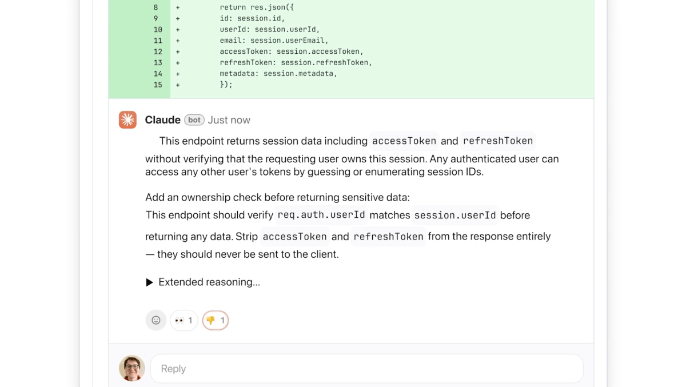
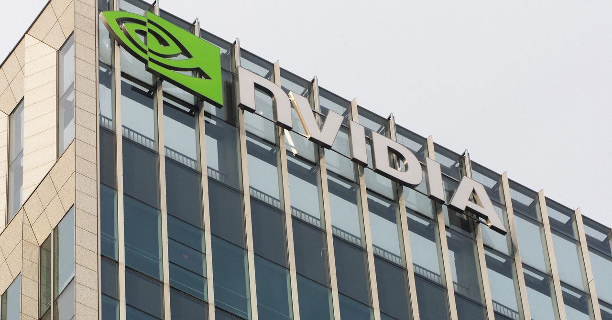
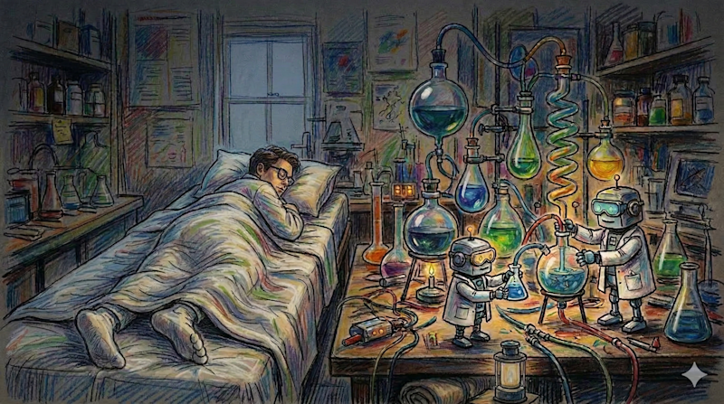
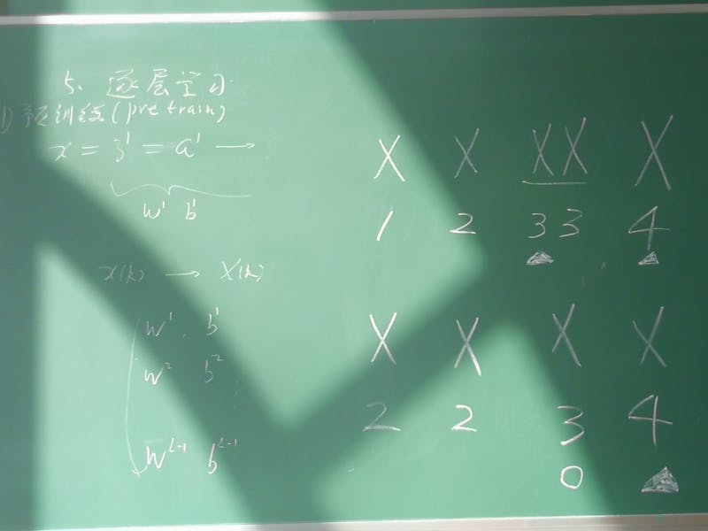

AI DAILY
AI 行业日报
2026年3月10日 · 精选 8 条
01政策监管
Anthropic 起诉美国国防部，30 多名竞对员工联名声援
Anthropic 周一正式起诉美国国防部，称其被列为"供应链风险"的决定违法，而且会直接挡掉联邦合同机会。
超过 30 名 OpenAI 和 Google DeepMind 员工联名签署支持声明。竞对公司的人公开站队，在前沿实验室里并不常见。
INSIGHT
这条新闻的分量，不只在一场官司。真正麻烦的是，一旦"安全风险"可以绕开透明标准直接贴标签，政府采购就会从技术比拼变成资格筛选。今天是 Anthropic，明天可能轮到别人。
02融资收购
OpenAI 收购 Promptfoo，把 Agent 安全前置
OpenAI 宣布收购开源 LLM 测试平台 Promptfoo。这个项目主要做红队测试、安全评估，以及 prompt 注入、越狱等问题排查。
当 Agent 开始代替人去下单、发邮件、调 API，前沿实验室也在争着证明自己的系统能进关键业务，而不是只能做演示。
INSIGHT
模型能力还在往上冲，但企业采购已经开始问另一件事：出了问题谁负责，怎么提前测出来。OpenAI 现在把测试框架直接收进体系里，说明安全能力正在从附属品变成主产品。
03产品发布
微软推出 Copilot Cowork，把 Copilot 做成一个团队
微软发布 Copilot Cowork，允许多个 AI Agent 在 Microsoft 365 内协同工作。一个做分析，一个写文档，一个排会议，最后再回到人手里确认。
这意味着 Copilot 正从"单轮问答助手"往"多 Agent 工作流"升级，背后依赖的是对邮件、日历、文档和 Teams 数据的统一调用。
INSIGHT
微软不是在多塞几个助手进去，它是在复制一套办公室分工。问题也跟着来了：当任务被拆给多名 Agent，流程确实更像团队协作了，责任边界却更像黑箱。
04产品发布
Anthropic 上线 Code Review，先补 AI 写码的质检环节

Anthropic 在 Claude Code 中推出 Code Review 功能，用多 Agent 系统自动分析 AI 生成的代码，重点盯错误、风险和改动影响。
当团队里越来越多代码先由 AI 写出第一版，原来那套靠人慢慢过一遍的 review 流程，已经开始跟不上提交速度。
INSIGHT
代码生成这一段，大家都在卷快。真正开始稀缺的，是谁能把"快写出来"变成"敢上线"。Anthropic 把 review 单独做成能力，卖的其实不是效率，是可交付的把关。
05技术突破
Nvidia 开源 NemoClaw，Agent 框架战打到基础设施层

Nvidia 开源 NemoClaw，提供工具调用、多步规划、记忆管理和安全护栏等完整 Agent 能力，而且原生贴合自家 GPU 推理体系。
它的设计重点不是 demo，而是企业部署：权限控制、审计日志、多租户隔离这些企业需要的东西，直接被放进默认能力里。
INSIGHT
GPU 厂商下场做框架，看的就不是一单软件收入了。谁先变成开发者默认栈，谁后面就更容易吃到训练、推理和运维那一整条链路。开源只是入口，不是终点。
06行业动态
Karpathy 发布 autoresearch，让 AI 开始自己跑科研流程

前 Tesla AI 总监 Andrej Karpathy 公开了 autoresearch 项目，目标是把文献检索、假设生成、实验设计和结果分析连成一条自动流程。
Karpathy 提到，很多 AI 研究时间其实消耗在数据清洗、调参和复现实验上，真正花在判断问题值不值得做的时间并不多。
INSIGHT
如果这类工具跑顺了，研究岗位先被压缩的不会是想法，而是执行层。以后实验室真正拉开差距的，可能不是谁更会调参，而是谁更早嗅到值得下注的问题。
07技术突破
Claude 摸到 Knuth 挑战集，数学能力不只会刷题了

Claude 在 Donald Knuth 的数学挑战集上取得突破。和标准竞赛题不同，这类题目更强调开放式探索，而不是按固定套路求唯一答案。
难点不只是算对，还要能提出证明路径、调整策略，甚至在没有标准答案时继续往前推。这比做基准测试上的选择题更接近真实研究。
INSIGHT
很多人把数学能力理解成会不会解题，但开放挑战看的是另一层东西：能不能在没有模板时继续组织思路。Claude 这次如果站稳，AI 的边界就往"探索"挪了一步。
08行业动态
OpenClaw 一周冲进三大办公平台，开源 Agent 开始成势

OpenClaw 登顶 GitHub Trending 后很快迎来生态扩散，钉钉、飞书、企业微信先后宣布原生集成，办公入口开始直接接触开源 Agent。
项目星标已经突破 25,000，日均新增超过 3,000。对一个刚起势的框架来说，社区增速和平台接入几乎同时发生，这个节奏并不常见。
INSIGHT
开源项目真正过线的时刻，不是 Star 漂亮，而是平台愿不愿意把入口交出来。OpenClaw 现在碰到的就是那道线。一旦形成默认接入，后面的生态惯性会比今天的热度更难逆转。
由 Zayen知览 整理 · 构建者视角